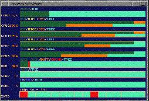

Charles Vidal
El autor: Estudiante. Presidente d'Apodéline

Arnaud Lamorlette
Director de investigación: BUF Compagnie
{kind=link}
Linux al servicio de los artistas en BUF COMPAGNIE
Resumen: BUF es una compañía especializada en la infografía, habiendo realizado efectos especiales en films como Batman y Robin. Arnaud Lamorlette, director de investigación y desarrollo nos cuenta cómo y porqué se están decantando poco a poco por Linux- CV: Buenos días. ¿Cuál es su nombre? ¿A qué se
dedica la compañía BUF
y cuál su función en la empresa?.
Me llamo Arnaud Lamorlette , soy responsable de la investigación y el desarrollo en la compañía BUF.
Mi función es encontrar soluciones para hacer las imágenes lo más bellas posibles. La compañía BUF es una sociedad que se ha especializado en la infografía. Comencé mi actividad hace 13 años, en 1985. Hemos realizado los efectos especiales de los films Visitantes 1 y 2, Batman y Robin, La ciudad de los niños perdidos, algunos videoclips como los de Rolling Stones, BIORK y muchos anuncios publicitarios.
- CV: ¿Cuál es su parque informático?
Ahora está constituido principalmente por máquinas Silicon Graphics. Empezamos nuestra andadura en 1985 con PCs (Intel 286) y UNIX. Podíamos desarrollar películas, pero con mucha paciencia. Hoy tenemos 75 máquinas Silicon Graphics conectadas en red, y un PC con cuatro procesadores Intel.
- CV: ¿Qué software utilizan?
Utilizamos programas de desarrollo propio (de modelización, animación, gestión de producción, etc.). Nos servimos también de algunos programas comerciales, en los que hacemos plug-ins: Softimage, flint, mental ray , alias, photoshop ...

¡¡Xosview con 4 procesadores!! - CV: Habéis comprado últimamente un PC con cuatro
procesadores Intel, en el cuál habéis instalado Linux ¿Por
qué Linux?
Sí, intentamos estar atentos en la tecnología disponible, anticipándonos a los próximos años. Así, pasamos del PC en 1991-92 a Silicon Graphics, porque esas estaciones de trabajo respondían bien a nuestras necesidades. Desde hace un año, los PCs han aumentado en potencia y disminuido en precio. Estamos muy interesados por la relación calidad/precio. Evaluamos una solución NT, y no quedamos satisfechos. Se integraba muy mal en nuestro entorno de trabajo (dificultades para compartir los datos con las maquinas Silicon, servicios de red muy limitados...).
Resulta difícil cuando uno proviene del mundo UNIX. Sin embargo, estamos muy interesados por la potencia del PC actualmente. Así pues, decidimos evaluar una solución LINUX, pensamos que el sistema se integraría muy bien en nuestro parque informático.
Pero, el gran problema, son el reducido número de programas comerciales que existen para Linux. Utilizamos Mental Ray y los autores portaron internamente el programa a Linux. Les pedimos esa versión, y que la soportaran oficialmente para Linux. Como varias personas la pidieron también al igual que nosotros, han decido portar la versión a Linux de manera oficial.
Entonces, evaluamos el programa bajo Linux, y como el resultado fue muy positivo, comenzamos a portar todos nuestros programas de desarrollo propio a Linux. La máquina Linux es utilizada como servidor de cálculo. Sin embargo, todos los infografistas siguen trabajando con Silicon Graphics; debido a que poseen un hardware muy potente para OpenGL.
- CV: ¿Cómo conoció linux?
En cuanto hacemos una búsqueda sobre UNIX en la Web, encontramos por fuerza páginas sobre LINUX. Probé a instalarlo personalmente en mi casa, hace seis meses, ¡ únicamente para saber lo que era! Pero en el trabajo, sin soporte técnico, la elección resultaba muy difícil. Mental Ray nos ha asegurado su apoyo, y por ello, nos hemos dirigido por este camino.
- CV: ¿Cuáles fueron los problemas encontrados?
Tuvimos varios problemas de instalación con los discos SCSI en la distribución Red Hat (problemas en el formateo del disco y la instalación de LILO). En lo que concierne a SMP, el sistema no era estable al principio, pero después de haber encontrado un parche en Internet, hemos obtenido un sistema estable (versión 2.1.77).
- CV: ¿Y al nivel de las prestaciones?
SGI O2 R5000 512 Mb. de memoria = 44000 Francos sin tva, con muy buenas reducciones; bi-pentium II 333 MHZ x 512 Mb = 21000 Francos sin tva, es decir, 6.66 veces más rápido que la O2 R5000 (esta diferencia no es teórica, pero la comprobamos con un brender2 y db2). En conclusión : una relación potencia/precio de 13827 para los cálculos. Y comparado con NT, linux es más rápido y estable.
- CV: SGI a anunciado una alianza con INTEL y Microsoft
¿Eso le preocupa?
No, nos conforta la alternativa Linux.
- CV: ¿Qué piensa de los programas libres, y
particularmente de los programas libres que se ejecutan bajo Linux
(Gcc, pov, The Gimp)?
En lo que concierne a gcc, lo encuentro muy bueno, es de una calidad profesional. Para POV y Gimp, son buenos programas pero que no responden de manera completa a nuestras necesidades (tenemos necesidades específicas: gestión de varias caches...). Eso demuestra que nunca han sido evaluados en producción. Tendríamos que modificar las fuentes de esos programas (the GIMP no tiene gestión alpha). No obstante, es algo que no podríamos hacer con photoshop.
- CV: ¿Cuál será el porvenir de linux en el mundo
gráfico? Recuerdo que una gran parte de las imágenes del titanic
fueron realizadas con linux.
Linux viene como uno más para hacer cálculos con un coste mínimo. Linux, en sí mismo, no tiene calidad gráfica interna como Silicon Graphics.
- CV: ¿Estaría interesado en programas comerciales y
profesionales bajo linux?
Está claro que si softimage o flint existieran bajo linux, la selección del SO seria evidente.
- CV: ¿Qué piensa de la comunidad de usuarios de
programas libres y las ideas que los vinculan?
Filosóficamente, es muy bueno. Pienso que a corto plazo, habrá mucha gente proveniente del mundo Unix, quedará desilusionada con Windows NT, y linux podrá ser una alternativa.
Es exactamente lo que nosotros hemos hecho. Hemos evaluado NT, nos ha dejado decepcionados y hemos optado por linux. Espero un soporte comercial más importante para linux. A mi nivel, busco drivers para las tarjetas OpenGL. ¿Existen para linux? Es fundamental si queremos transformar las máquinas linux en estaciones de trabajo infográfico. El hecho de que los programas no estén respaldados por una empresa nos preocupa en cuanto al porvenir del producto. Si el programa es comercial, obliga la empresa a mejorarlo y a responder a sus clientes. Por lo tanto, en lo que concierne a linux, es un SO de nivel profesional. El hecho de poder evaluarlo gratis; es algo extraordinario.
- CV: ¿Quiere añadir algo para concluir?
Sí, quisiera hablar de la oposición entre NT y linux; Microsoft no hace productos excelentes, pero hace uniforme la informática, lo que es muy bueno para el público. En parte, son actores de la democratización de la informática. Por lo tanto, la mayor ventaja es la potencia de su marketing. Por otro lado, mirando atrás en la historia de la informática, cosas geniales como NextStep no tienen usuarios porque no tienen marketing. Hay que temer que sea lo mismo para linux. El programa más genial no podrá desarrollarse sin marketing.
- CV: Gracias.
Traducido por Joaquin Gonzales
{kind=link}